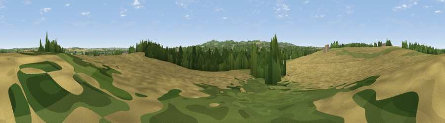

Bellevue Hill
#45006 in England · top 98% of its area beats it · near Garendon ParkThe view, rendered

A 360° render of this exact spot computed from the terrain model, tree cover and land cover — summer colours, afternoon light, calibrated against photographs of famous viewpoints. Real trees, hedges and buildings will differ in detail.
The panorama
Grey silhouette: terrain skyline in each direction (720 bearings, Earth curvature and refraction included). Dashed green: skyline with trees (+15 m) and buildings (+8 m) as obstacles. Blue strip: how far the ground is visible on each bearing.
Where the view opens
Wedge length = distance to the farthest visible ground on that bearing (vegetation-aware). Rings at 10, 25 and 50 km.
What fills the view
63% cropland · 20% woodland · 12% grassland · 4% built-up
Angular shares of the visible panorama (visual magnitude), not map area. Landscape diversity 0.44 (0–1 Shannon).
Key numbers
More beautiful places nearby
The staircase of upgrades: each row has a higher view potential than everything closer. Driving times are estimates from straight-line distance, calibrated against real road routing — check an actual route before setting out.
| Place | Direction | Drive | Score |
|---|---|---|---|
| Viewpoint near Shepshed | SW · 4 km | ~9 min | 63.3 |
| Ives Head | SSW · 5 km | ~11 min | 73.3 |
| Viewpoint near Woodhouse Eaves | S · 6 km | ~14 min | 77.7 |
| Viewpoint near Mow Cop | WNW · 74 km | ~97 min | 78.9 |
| Viewpoint near Mow Cop | WNW · 74 km | ~97 min | 80.2 |
| Viewpoint near Little Wenlock | W · 88 km | ~112 min | 84.2 |
| The Wrekin | W · 88 km | ~112 min | 85.0 |
| Viewpoint near Little Wenlock | W · 88 km | ~113 min | 86.6 |
52.78596, -1.25820 · source: osm peak · position refined by local search. Computed location — check access rights before visiting.